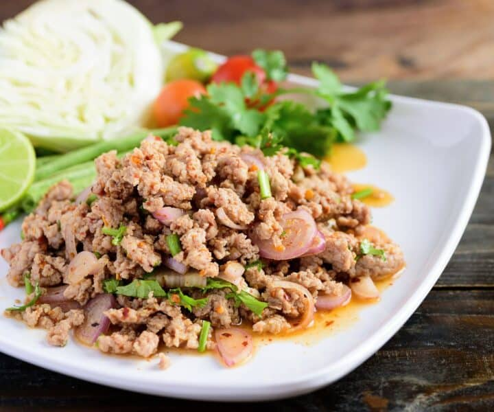

Authentic Thai Laab Moo (Minced Pork)

Laab ลาบ is one of the most iconic dishes in Thai cuisine that is popular in many Thai restaurants around the
world. To
me, it represents one of the best parts about Thai food - spicy, bright flavours loaded with fresh herbs. It is
also one
of the easiest Thai dishes you can make at home, making it very beginner and weeknight friendly!
Laab Moo ingredients
Here are all the ingredients you'll need to make this recipe. For amounts, check out the full recipe card below.
- White glutinous rice or jasmine rice, uncooked. This is for making the most important ingredient in this
whole thing:
toasted rice powder or kao kua. It is not laab without kao kua.
- Ground pork. Lean ground pork is fine, but if you can, get regular ground pork as the fat will keep
everything moist,
especially since there is no added fat in the dressing.
- Shallots, red onion will also work if shallots are not available
- Fresh mint leaves, another must-have ingredient without which it is not laab!
- Cilantro, if you're a cilantro hater, leaving it out is fine.
- Green onion
- Sawtooth coriander, also known as cilantro. This is harder to find and is optional. You can also add more
cilantro or
mint.
- Fish sauce
- Lime juice
- Chili flakes, you can add as much as you want but laab is supposed to be spicy! In Thailand we toast our
chili flakes to
get them smokey, which you can do simply by toasting it in a dry skillet over medium heat until it darkens
and smells
smokey.
- Sticky rice for serving.
- Fresh raw vegetables for serving such as lettuce, cabbage, long beans and cucumber.
How to make Laab
Here are all the steps to make this recipe. Soon enough you will be tasting the flavours of Northern Thailand
- Make toasted rice powder: Place the raw rice in a dry skillet pan and cook over medium high heat, moving it
constantly,
until a deep brown colour develops. Don't stop at golden brown, for the best flavour you want it dark brown!
- Grind the rice with a coffee or spice grinder, or in a mortar and pestle into a coarse powder.
- Add 2 tablespoon water to a medium pot over high heat, then add the pork and stir it constantly to break it
up. Once
it's cooked, remove from heat.
- Using the pot as your mixing bowl, add shallots into the pork and stir to break up the rings and lightly
cook the
shallots.
- Add the fish sauce, lime juice, the toasted rice powder, chili flakes, cilantro, sawtooth coriander and
green onion into
the pot and stir to mix. Taste and adjust seasoning as needed, which may vary because the amount of pork
juice that
remains in the pot will vary. If you feel like it's a little bit too strong (too tart, too salty) you can
add just a
pinch of sugar to balance, but do not make it sweet. Remember, there will be sticky rice to balance it all
later!
- When ready to serve, stir in the fresh mint leaves. (I like to leave the mint out until serving time because
they turn
black when exposed to heat)
- Garnish with some mint leaves and more chili flakes. Serve with some fresh crunchy vegetables and sticky
rice!